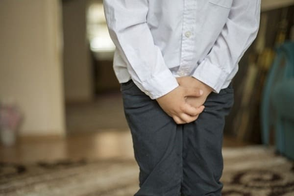
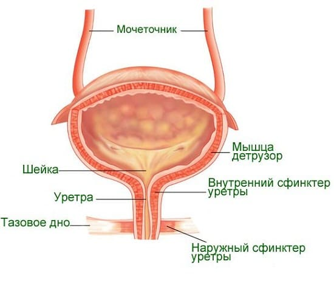
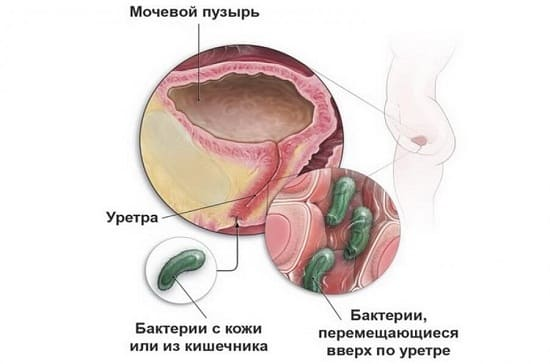
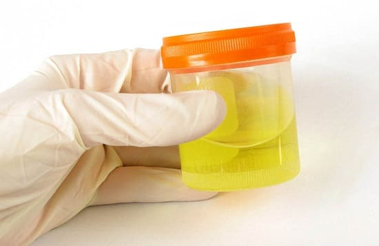
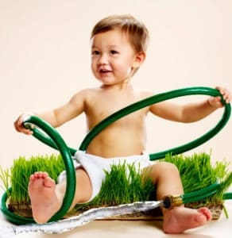
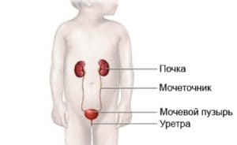

Одна из главных функций почки — отфильтровать ненужные продукты из крови и вывести их с мочой. Из почки моча спускается в мочевой пузырь по трубке, которая называется мочеточником. Из мочевого пузыря моча попадает в другую трубку — уретру, а из нее — в подгузник или в унитаз. Бактериальная инфекция может развиться в любом месте этой «канализационной системы», которую называют мочевыводящими путями. Врачи обычно говорят об инфекции мочевыводящих путей, или сокращенно ИМВП.
ПРИЧИНЫ
Обычно моча стерильна, и пока «канализация» работает нормально, моча легко течет, а ребенок легко мочится. Но человеческое тело устроено так, что если жидкость где-то застоится, то рано или поздно в ней разовьются бактерии. Поэтому любой порок развития, привычка или заболевание, в результате которых замедляется пассаж мочи, являются фактором риска развития инфекции мочевыводящих путей. Так как у девочек уретра короче и шире, у них чаще развиваются ИМВП, потому что бактерии из влагалища легко попадают в нее, а потом — в мочевой пузырь. Вот некоторые причины развития ИМВП у детей:

СОВЕТ ДОКТОРОВ СИРС: ЕСЛИ СОМНЕВАЕТЕСЬ - ПРОВЕРЬТЕ Как видите, симптомы ИМВП у младенцев весьма неопределенны, поэтому, если ребенок болеет без очевидной причины, педиатры всегда проверят анализ мочи. Известно, что рецидивирующая недиагностированная ИМВП может привести к повреждению почек. Не выявленная, нелеченная, умеренно выраженная ИМВП может внезапно начать прогрессировать настолько, что бактерии попадут в кровоток, вызвав тяжелое заболевание — сепсис, которое очень опасно для младенца и требует госпитализации. Чем раньше выявить и начать лечение ИМВП, тем лучше результат. |
СИМПТОМЫ ИМВП У МЛАДЕНЦЕВ
Чем младше ребенок, тем сложнее поставить диагноз. Так как младенцы не могут сказать, где и что у них болит, симптомы ИМВП у них не столь очевидны, особенно в первые месяцы жизни. Вот два возможных признака.
Лихорадка неясного генеза. Если ребенка лихорадит и ни вы, ни врач не можете понять почему, подозревайте инфекцию мочевыводящих путей.
Ребенок явно болен, но неясно чем: сонливость, рвота, лихорадка «без причины».

ЧТО СДЕЛАЕТ ВРАЧ
Так как вы не можете сказать годовалому малышу «помочиться в баночку», ниже описано, что вы и ваш врач можете сделать для диагностики у младенца:
Мочеприемник для младенцев. Медсестра (или родитель) разместит специальный мочеприемник возле влагалища (отверстие уретры у девочек находится рядом с влагалищем) или пениса и обернет его пеленкой. Предварительно она (или вы) тщательно обмоет это место, чтобы обычно населяющие его бактерии не попали в мочеприемник. Затем ребенка надо покормить. Когда ребенок помочится в этот мешок, можно будет сделать анализ мочи, который может показать наличие инфекции мочевыводящих путей. Как вы понимаете, анализ, собранный таким образом, нестерилен, но позволяет хотя бы строить предположения. Если в нем нет признаков ИМВП (наличие эритроцитов, лейкоцитов, нитритов — продуктов жизнедеятельности бактерий), то вероятность ее пусть и нельзя полностью исключить, но все же снижается. Однако если анализ подтверждает подозрения на ИМВП, то врач может перейти к следующему шагу.
Держите наготове чашку. Вымойте ребенку пенис или половые губы и покормите не пеленая. Держите под рукой стерильную чашку, чтобы поймать мочу из «средней струи». Хотя этот метод сбора мочи более рискован, он дает более точный результат, чем анализ из мочеприемника. Врач повторит анализ мочи и, возможно, отошлет образец в бактериологическую лабораторию. Бактериологическое исследование ответит на два важных вопроса: 1) действительно ли у ребенка ИМВП и 2) если он будет положительным, то будут определены бактерии, вызвавшие заболевание. Тогда лаборатория сделает пробу на чувствительность к антибиотикам, чтобы определить, какой антибиотик будет наиболее эффективным для лечения.
Забор мочи катетером. Если ребенок тяжело болен и требуется точный диагноз, врач может получить мочу с помощью катетера, введя тоненькую трубочку через уретру в мочевой пузырь ребенка. Хотя, конечно, это самый болезненный способ сбора мочи, одновременно он самый точный для определения болезнетворных бактерий, так как никакие безопасные микробы, которые обычно живут вокруг пениса или влагалища, не попадут в полученный таким образом образец мочи.

СИМПТОМЫ ИМВП У ДЕТЕЙ СТАРШЕГО ВОЗРАСТА
У старших детей симптомы более определенны. Самые распространенные:
ЧТО СДЕЛАЕТ ВРАЧ
Если на основании вышеописанных симптомов врач заподозрит инфекцию мочевыводящих путей, он назначит анализ мочи из «средней струи» или ребенку предложат «помочиться в баночку» после подмывания. Скорее всего, в этом ему понадобится ваша помощь. Затем врач может отправить стерильный образец мочи в бактериологическую лабораторию на посев, чтобы определить возбудителя инфекции.
Вернемся в кабинет врача. Если симптомы и анализ подтверждают ИМВП, врач назначит антибиотик, наиболее эффективно действующий на бактерии, вызывающие ИМВП. Но если диагноз остается сомнительным, врач подождет результатов бактериологического исследования мочи и только потом выпишет антибиотик.
Решение начать лечение до получения результатов посева или «ждать и наблюдать» принимается на основании того, насколько выражены симптомы и каково состояние ребенка.
Если вы с врачом решили подождать и понаблюдать при умеренных проявлениях цистита без лихорадки, вы можете начать «вымывать» инфекцию, давая ребенку выпить 3 стакана клюквенного сока (или купите клюквенный экстракт в любом магазине здорового питания) и витамин С (250 мг для детей от 1 года до 4 лет и 500 мг для детей 5 лет и старше) ежедневно. К тому времени, как будет готов результат посева мочи, ребенку уже может стать лучше. Возможно, удастся обойтись без антибиотиков, даже если бактериологический анализ будет положительным. Обсудите такой вариант со своим врачом.

СОВЕТ ДОКТОРОВ СИРС: КАК СОБРАТЬ МОЧУ ДЛЯ АНАЛИЗА ДОМА Если вы подозреваете, что у вашего ребенка ИМВП, вы должны правильно собрать мочу для анализа и доставить ее в лабораторию. Вот как это сделать:
|
ПРИЗНАКИ БОЛЕЕ ТЯЖЕЛОЙ ИМВП ИЛИ ВОСПАЛЕНИЯ ПОЧЕК
Цель диагностики и лечения ИМВП — не дать инфекции проникнуть в почки. Вот признаки, которые позволят вам заподозрить, что это все же произошло и у ребенка развилось воспаление почек (нефрит):
При подозрении на пиелонефрит врач назначит те же самые анализы мочи, что и при ИМВП. Возможно, надо будет сделать анализ крови, чтобы узнать, не попали ли бактерии в кровоток, что часто случается при инфицировании почек. Для лечения пиелонефрита обычно используют мощный антибиотик, назначая его внутримышечно или внутривенно. В зависимости от тяжести состояния ребенок, возможно, будет нуждаться в госпитализации на несколько дней, пока не подействует антибиотик.

ПРОФИЛАКТИКА
Запомните два простых способа предупредить развитие ИМВП:
Вот как вы можете предупредить обострение ИМВП и помочь лечению, если она все же разовьется:
Избегайте раздражения кожи. Щелочное мыло, пена для ванн, облегающая одежда могут вызвать раздражение уретры у девочек. Вы можете снизить риск развития ИМВП у своей малышки, не допуская, чтобы она долго сидела в растворе мыла или пены. Пусть играет в ванне просто с теплой водой, используйте мыло только в конце, перед тем как завершить купание.
Учите правильно вытираться. Научите малышку правильно вытираться — спереди назад, а не наоборот, чтобы микробы из влагалища не попали в уретру.
Учите слушать сигналы мочевого пузыря. Поощряйте ребенка ходить в туалет, когда его мочевой пузырь сигнализирует ему о своей наполненности (см. об обучении слушать сигналы мочевого пузыря в разделе об энурезе).
Лечите запоры. Следите, чтобы кишечник ребенка нормально функционировал.
Учите полностью опорожнять мочевой пузырь. Дети-торопыги часто не полностью опорожняют свой мочевой пузырь. Учите ребенка «тужиться три раза, чтобы выдавить все мочу» (больше об этом — в разделе об опорожнении мочевого пузыря при энурезе).
Клюквенный сок каждый день. Ежедневно давайте ребенку клюквенный сок или добавку с экстрактом клюквы из магазина здорового питания. В тех же целях можно использовать чернику. Фитонутриенты, содержащиеся в этих ягодах, препятствуют агрегации (прилипанию) бактерий к стенке мочевого пузыря и благодаря этому уменьшают вероятность развития инфекции.
РЕЦИДИВИРУЮЩАЯ ИМВП: ЧТО МОЖЕТ ПОСОВЕТОВАТЬ ВРАЧ
Если у вашего ребенка повторно развилась ИМВП, важно убедиться в отсутствии аномалии развития мочевыводящих путей, чтобы минимизировать ИМПВ и защитить растущие почки. Для этого врач предложит полное обследование мочевыводящей системы ребенка. Обследование может включать:
Здоровье ребенка от докторов Сирс / Сирс У. и др.